<title>CaisseDZ Workflow</title>
<meta name="claude:viewport-fit-sides" content="cover">
<meta name="description" content="CaisseDZ : workflow détaillé et fonctionnement, module par module">
<link rel="preconnect" href="https://fonts.googleapis.com">
<link rel="stylesheet" href="https://fonts.googleapis.com/css2?family=Poppins:wght@400;500;600;700&display=swap">
<style>
:root{
  /* Mise en page : pages A4 empilées, captures à gauche, fiche du module à droite (modèle CaisseDZ). */
  --violet:#6c5ce7; --violet-2:#8f7cf0; --violet-fonce:#4b2f63; --rose:#ff6b81; --rose-fond:#ffe9ec;
  --fond:#f4f2fb; --page:#ffffff; --carte:#f6f4ff; --texte:#1b1830; --doux:#6b6880; --trait:#e6e2f3;
  --ombre:0 10px 30px rgba(76,56,160,.10);
  --titre:'Poppins',system-ui,-apple-system,'Segoe UI',sans-serif;
  --corps:'Poppins',system-ui,-apple-system,'Segoe UI',sans-serif;
}
@media (prefers-color-scheme:dark){:root:not([data-theme="light"]){
  --fond:#14121f; --page:#1c1a2b; --carte:#262338; --texte:#ecebf5; --doux:#a9a6c0; --trait:#353149;
  --violet-fonce:#c9b8ff; --rose-fond:#3a2230; --ombre:0 10px 30px rgba(0,0,0,.35); color-scheme:dark}}
:root[data-theme="dark"]{--fond:#14121f; --page:#1c1a2b; --carte:#262338; --texte:#ecebf5; --doux:#a9a6c0;
  --trait:#353149; --violet-fonce:#c9b8ff; --rose-fond:#3a2230; --ombre:0 10px 30px rgba(0,0,0,.35); color-scheme:dark}
*{box-sizing:border-box}
body{background:var(--fond);color:var(--texte);font-family:var(--corps);font-size:14px;line-height:1.55;
  padding-left:max(16px,env(safe-area-inset-left,0px));padding-right:max(16px,env(safe-area-inset-right,0px));
  padding-block:24px}
.doc{max-width:1120px;margin:0 auto;display:flex;flex-direction:column;gap:28px}
.page{background:var(--page);border-radius:18px;box-shadow:var(--ombre);padding:44px 52px 22px;display:flex;
  flex-direction:column;gap:14px;min-width:0}
h1,h2,h3,h4,h5{font-family:var(--titre);margin:0;text-wrap:balance}
h2{font-size:28px;font-weight:700;letter-spacing:-.01em}
.eyebrow{font-size:10.5px;letter-spacing:.22em;text-transform:uppercase;color:var(--violet);font-weight:700;margin:0}
.eyebrow.cat{color:var(--rose);display:flex;gap:10px;align-items:center}
.nouveau{background:var(--violet);color:#fff;border-radius:999px;padding:2px 9px;letter-spacing:.08em;font-size:9.5px}
.lead{color:var(--doux);margin:0;max-width:78ch}
.couverture{background:linear-gradient(135deg,#6a5ad8 0%,#8a76e8 55%,#9d86f0 100%);color:#fff;text-align:center;
  padding:110px 40px 60px;gap:18px;align-items:center}
.logo{display:inline-flex;flex-direction:column;align-items:center;background:rgba(60,36,120,.45);border-radius:18px;
  padding:16px 26px;font-family:var(--titre);font-weight:700;font-size:38px;line-height:1;box-shadow:0 12px 30px rgba(40,20,90,.35)}
.logo small{font-size:38px}
.couverture .eyebrow{color:rgba(255,255,255,.8)}
.couverture h1{font-size:40px;font-weight:700}
.couverture p{max-width:62ch;color:rgba(255,255,255,.88);margin:0}
.couverture .version{font-size:11px;opacity:.7;margin-top:40px}
.sommaire{display:grid;grid-template-columns:repeat(auto-fill,minmax(210px,1fr));gap:8px}
.sommaire a{display:flex;gap:10px;align-items:center;padding:9px 12px;border-radius:10px;background:var(--carte);
  color:var(--texte);text-decoration:none;font-weight:500}
.sommaire a:hover,.sommaire a:focus-visible{outline:2px solid var(--violet);outline-offset:1px}
.grille{display:grid;grid-template-columns:repeat(4,minmax(0,1fr));gap:14px}
.carte{border:1px solid var(--trait);border-radius:14px;padding:16px;display:flex;flex-direction:column;gap:6px;min-width:0}
.carte.pleine{background:var(--carte);border:none}
.carte .ico{font-size:22px}
.carte h5{font-size:13px;color:var(--violet-fonce)}
.carte p{margin:0;color:var(--doux);font-size:12px}
.cycle{display:flex;align-items:stretch;gap:8px;flex-wrap:wrap;justify-content:center}
.etape{flex:1 1 150px;max-width:190px;background:var(--page);border-radius:16px;box-shadow:var(--ombre);padding:16px;
  text-align:center;display:flex;flex-direction:column;gap:6px;align-items:center}
.etape .ico{width:44px;height:44px;border-radius:12px;background:var(--carte);display:grid;place-items:center;font-size:22px}
.etape h5{font-size:13px}.etape p{margin:0;font-size:11px;color:var(--doux)}
.fleche{align-self:center;color:var(--violet);font-size:20px}
.pastilles{display:flex;gap:8px;flex-wrap:wrap;justify-content:center}
.pastille{background:var(--violet-fonce);color:var(--page);border-radius:999px;padding:6px 12px;font-size:11px;font-weight:600}
.satellite{border:1px dashed var(--trait);border-radius:999px;padding:5px 12px;font-size:11px;color:var(--doux)}
.satellite b{color:var(--rose)}
.note{font-size:11px;color:var(--doux);text-align:center;font-style:italic}
.flux{background:var(--carte);border-radius:14px;padding:16px 18px;display:flex;flex-direction:column;gap:10px}
.flux h5{font-size:13px;color:var(--violet-fonce)}
.pas-liste{display:flex;flex-wrap:wrap;gap:8px;align-items:center}
.pas{background:var(--page);border-radius:10px;padding:7px 12px;font-size:11.5px;font-weight:600;box-shadow:0 2px 6px rgba(76,56,160,.08)}
.fl{color:var(--doux)}
.intel{border:1px solid var(--trait);border-radius:16px;padding:18px 20px;display:flex;flex-direction:column;gap:10px}
.intel h5{font-size:15px;display:flex;gap:10px;align-items:center}
.intel .n{width:26px;height:26px;border-radius:50%;background:var(--violet);color:#fff;display:grid;place-items:center;font-size:12px}
.intel p{margin:0;color:var(--doux);font-size:12.5px;max-width:95ch}
.tete-module{display:flex;gap:16px;align-items:flex-start}
.tuile{width:54px;height:54px;flex:none;border-radius:14px;background:var(--carte);display:grid;place-items:center;font-size:26px}
.module{display:grid;grid-template-columns:minmax(0,1.15fr) minmax(0,1fr);gap:24px;align-items:start}
.captures{display:flex;flex-direction:column;gap:14px;min-width:0}
.captures-sup{display:grid;grid-template-columns:repeat(auto-fit,minmax(min(100%,320px),1fr));gap:18px;margin-top:22px}
figure{margin:0;display:flex;flex-direction:column;gap:6px}
figure img{width:100%;height:auto;border-radius:10px;border:1px solid var(--trait);box-shadow:0 8px 22px rgba(40,30,90,.14);display:block}
figcaption{font-size:11px;color:var(--doux);text-align:center}
.fiche{display:flex;flex-direction:column;gap:8px;min-width:0}
.fiche h4{font-size:10.5px;letter-spacing:.16em;text-transform:uppercase;color:var(--violet);margin-top:6px}
.chips{display:flex;flex-wrap:wrap;gap:7px}
.chip{border:1px solid var(--trait);background:var(--page);border-radius:999px;padding:5px 11px;font-size:11.5px}
.chip.sombre{background:var(--violet-fonce);color:var(--page);border-color:transparent;font-weight:600}
.chip.action{background:var(--rose-fond);color:var(--rose);border-color:transparent;font-weight:600}
h3.filet{font-size:14px;color:var(--violet-fonce);padding-bottom:8px;border-bottom:1px solid var(--trait);margin-top:6px}
.scenarios{display:grid;grid-template-columns:repeat(3,minmax(0,1fr));gap:14px}
.scenario{background:var(--carte);border-left:3px solid var(--violet);border-radius:12px;padding:14px 16px;display:flex;gap:10px;align-items:flex-start}
.scenario .num{width:22px;height:22px;flex:none;border-radius:50%;background:var(--violet);color:#fff;display:grid;place-items:center;font-size:11px;font-weight:600}
.scenario p{margin:0;font-size:12px}
.deux{display:grid;grid-template-columns:repeat(2,minmax(0,1fr));gap:22px}
.deux h4{font-size:13px;color:var(--violet-fonce);padding-bottom:8px;border-bottom:1px solid var(--trait);margin-bottom:10px}
.pile{display:flex;flex-direction:column;gap:12px}
.connexion{display:grid;grid-template-columns:minmax(0,1.3fr) minmax(0,1fr);gap:22px;align-items:start}
table.taux{border-collapse:collapse;width:100%;font-size:12px;font-variant-numeric:tabular-nums}
table.taux th,table.taux td{border-bottom:1px solid var(--trait);padding:7px 8px;text-align:left}
table.taux th{font-size:10.5px;letter-spacing:.1em;text-transform:uppercase;color:var(--violet)}
.table-defile{overflow-x:auto}
.pied{display:flex;justify-content:space-between;border-top:1px solid var(--trait);padding-top:10px;margin-top:auto;
  font-size:10px;color:var(--doux)}
.couverture .pied{display:none}
@media (max-width:900px){
  .page{padding:28px 20px 16px}
  .module,.connexion,.deux{grid-template-columns:minmax(0,1fr)}
  .grille{grid-template-columns:repeat(2,minmax(0,1fr))}
  .scenarios{grid-template-columns:minmax(0,1fr)}
  .fleche{display:none}
}
@media (max-width:480px){.grille{grid-template-columns:minmax(0,1fr)}h2{font-size:23px}.couverture h1{font-size:30px}}
@media print{
  body{background:#fff;padding:0}
  .doc{gap:0;max-width:none}
  .page{box-shadow:none;border-radius:0;break-after:page;min-height:auto}
}
@media (prefers-reduced-motion:reduce){*{scroll-behavior:auto}}
</style>
<main class="doc">
<section class="page couverture">
      <div class="logo">Caisse<small>DZ</small></div>
      <p class="eyebrow">Présentation fonctionnelle détaillée</p>
      <h1>Workflow &amp; Fonctionnement</h1>
      <p>Module par module : à quoi il sert, ses champs et actions, ses scénarios d'usage réels, avec une capture
      d'écran de l'application pour chacun ; le circuit commercial (devis, commande, livraison, facture, avoir),
      la TVA et les fonctions intelligentes.</p>
      <p class="version">CaisseDZ Desktop (Windows) · document de présentation · octobre 2026</p>
    </section><section class="page"><p class="eyebrow">Sommaire</p><h2>Les modules de CaisseDZ</h2><p class="lead">Cliquez sur un module pour aller à sa page.</p><div class="sommaire"><a href="#m-tableau-de-bord"><span>📊</span>Tableau de bord</a><a href="#m-caisse"><span>🛒</span>Caisse</a><a href="#m-ventes"><span>🧾</span>Ventes</a><a href="#m-devis-et-commandes"><span>📄</span>Devis &amp; commandes</a><a href="#m-retours"><span>↩️</span>Retours</a><a href="#m-produits"><span>🏷️</span>Produits</a><a href="#m-stock"><span>📦</span>Stock</a><a href="#m-entrées---achats"><span>📥</span>Entrées / Achats</a><a href="#m-commandes-fournisseurs"><span>🚚</span>Commandes fournisseurs</a><a href="#m-sorties"><span>📤</span>Sorties</a><a href="#m-magasins"><span>🏬</span>Magasins</a><a href="#m-besoins"><span>⚠️</span>Besoins</a><a href="#m-clients"><span>👤</span>Clients</a><a href="#m-fournisseurs"><span>🏭</span>Fournisseurs</a><a href="#m-gestion-caisse"><span>💰</span>Gestion caisse</a><a href="#m-utilisateurs"><span>🔐</span>Utilisateurs</a><a href="#m-zakat"><span>🌙</span>Zakat</a><a href="#m-historique"><span>📜</span>Historique</a><a href="#m-paramètres"><span>⚙️</span>Paramètres</a></div><footer class="pied"><span>CaisseDZ · Workflow détaillé</span><span>Sommaire</span></footer></section><section class="page" id="nouveautes"><p class="eyebrow">Cette version</p><h2>Nouveautés</h2><p class="lead">Les fonctionnalités ajoutées dans cette version, détaillées dans les pages des modules concernés.</p><div class="grille"><div class="carte"><div class="ico">🧾</div><h5>TVA HT / TVA / TTC partout</h5><p>Taux 19 %, 9 % ou exonéré figé sur chaque ligne ; ticket, facture, clôture Z, détail des ventes et des entrées, analyse « TVA par taux » ; TVA déductible sur les entrées ; aide G50 ; régime Réel ou IFU.</p></div><div class="carte"><div class="ico">🔢</div><h5>Factures et avoirs numérotés</h5><p>Numérotation continue FAC / AVO distincte du ticket VTE, identités fiscales du vendeur (NIF, NIS, RC, article d&#x27;imposition) et du client figées, montant en lettres, avoir automatique sur retour ou annulation.</p></div><div class="carte"><div class="ico">📄</div><h5>Devis, proforma, commande, BL</h5><p>Devis DEV et proforma PRO transformables en bon de commande BCC, livré en une ou plusieurs fois par des bons de livraison LIV distincts du ticket.</p></div><div class="carte"><div class="ico">🚚</div><h5>Commandes fournisseurs</h5><p>Bon de commande BCF réceptionné en une ou plusieurs entrées ; quantités reçues calculées, reliquat soldé à la main.</p></div><div class="carte"><div class="ico">☎️</div><h5>Téléphone sur 10 chiffres</h5><p>Saisie limitée à 10 chiffres pour les clients et les fournisseurs.</p></div><div class="carte"><div class="ico">⚖️</div><h5>Solde initial des tiers</h5><p>Dette ou avance de reprise saisie à la création d&#x27;un client ou d&#x27;un fournisseur ; comptée dans le solde, le relevé et imputée en premier.</p></div><div class="carte"><div class="ico">🔎</div><h5>Filtre tiers des versements</h5><p>Les versements se filtrent par client ou fournisseur.</p></div></div><footer class="pied"><span>CaisseDZ · Workflow détaillé</span><span>Nouveautés</span></footer></section><section class="page" id="vue"><p class="eyebrow">Vue d&#x27;ensemble</p><h2>Un cycle complet, du fournisseur au client</h2><p class="lead">CaisseDZ couvre tout le parcours d&#x27;un commerce de détail ou de gros : l&#x27;approvisionnement, le catalogue, la vente au comptoir ou sur devis, le suivi des tiers et le pilotage, sur un seul poste et sans connexion Internet obligatoire.</p><div class="pastilles"><span class="pastille">🔎 Reconnaissance produit (code-barres)</span><span class="pastille">📄 Smart Scan IA (factures fournisseurs)</span><span class="pastille">⚡ Scan en rafale en caisse</span></div><p class="note">↓ alimentent le cycle principal ↓</p><div class="cycle"><div class="etape"><div class="ico">📥</div><h5>1. Approvisionnement</h5><p>Besoins → commande fournisseur → entrée (Smart Scan IA), réception partielle</p></div><span class="fleche">→</span><div class="etape"><div class="ico">🏷️</div><h5>2. Catalogue</h5><p>Produits, TVA, colis, remises et packs, fiche pré-remplie par IA</p></div><span class="fleche">→</span><div class="etape"><div class="ico">🛒</div><h5>3. Vente</h5><p>Devis → commande → livraison, ou caisse ; facture et avoir numérotés</p></div><span class="fleche">→</span><div class="etape"><div class="ico">👥</div><h5>4. Tiers</h5><p>Clients et fournisseurs : solde initial, versements, relevés</p></div><span class="fleche">→</span><div class="etape"><div class="ico">📊</div><h5>5. Pilotage</h5><p>Tableau de bord, Situation (TVA par taux), clôtures Z, Historique</p></div></div><p class="note">↓ modules satellites, déclenchés depuis le cycle principal ↓</p><div class="pastilles"><span class="satellite"><b>●</b> Besoin (déclenché par une rupture de stock)</span><span class="satellite"><b>●</b> Retour (depuis une vente ou une entrée)</span><span class="satellite"><b>●</b> Versement (règlement client / fournisseur)</span><span class="satellite"><b>●</b> Facture &amp; avoir (depuis une vente)</span><span class="satellite"><b>●</b> Gestion caisse (session et clôture Z encadrant toute vente)</span></div><h3 class="filet">Structure des modules</h3><div class="grille"><div class="carte pleine"><div class="ico">🛒</div><h5>Général</h5><p>Tableau de bord, Caisse, Ventes, Devis &amp; commandes, Retours</p></div><div class="carte pleine"><div class="ico">📦</div><h5>Stock</h5><p>Produits, Stock, Entrées, Commandes fournisseurs, Sorties, Magasins, Besoins</p></div><div class="carte pleine"><div class="ico">👥</div><h5>Tiers</h5><p>Clients et Fournisseurs (avec leurs versements)</p></div><div class="carte pleine"><div class="ico">⚙️</div><h5>Gestion</h5><p>Gestion caisse, Utilisateurs, Zakat, Historique, Paramètres</p></div></div><footer class="pied"><span>CaisseDZ · Workflow détaillé</span><span>01 — Vue d&#x27;ensemble</span></footer></section><section class="page" id="circuits"><p class="eyebrow">Circuits</p><h2>Le circuit commercial pas à pas</h2><p class="lead">Chaque document garde le lien avec celui dont il est issu ; le stock et les soldes ne bougent qu&#x27;au moment de la livraison ou de la réception.</p><div class="flux"><h5>Vente sur devis (client professionnel)</h5><div class="pas-liste"><span class="pas">Devis DEV</span><span class="fl">→</span><span class="pas">Accepté</span><span class="fl">→</span><span class="pas">Commande BCC</span><span class="fl">→</span><span class="pas">Livraison partielle → BL LIV + vente VTE</span><span class="fl">→</span><span class="pas">Livraison du reste</span><span class="fl">→</span><span class="pas">Facture FAC</span><span class="fl">→</span><span class="pas">Retour → avoir AVO</span></div></div><div class="flux"><h5>Vente au comptoir</h5><div class="pas-liste"><span class="pas">Session de caisse ouverte</span><span class="fl">→</span><span class="pas">Scan des produits</span><span class="fl">→</span><span class="pas">Encaissement (F4)</span><span class="fl">→</span><span class="pas">Ticket avec TVA</span><span class="fl">→</span><span class="pas">Facture FAC sur demande</span><span class="fl">→</span><span class="pas">Clôture Z avec TVA par taux</span></div></div><div class="flux"><h5>Approvisionnement</h5><div class="pas-liste"><span class="pas">Rupture / seuil</span><span class="fl">→</span><span class="pas">Liste de besoins</span><span class="fl">→</span><span class="pas">Commande fournisseur BCF</span><span class="fl">→</span><span class="pas">Entrée ENT (réception partielle)</span><span class="fl">→</span><span class="pas">Reste reçu ou soldé</span><span class="fl">→</span><span class="pas">Versement fournisseur</span></div></div><div class="flux"><h5>Règlement des tiers</h5><div class="pas-liste"><span class="pas">Solde initial</span><span class="fl">→</span><span class="pas">+ ventes / entrées à crédit</span><span class="fl">→</span><span class="pas">− retours (avoirs)</span><span class="fl">→</span><span class="pas">− versements imputés</span><span class="fl">→</span><span class="pas">= solde du tiers</span></div></div><h3 class="filet">Numérotation des pièces</h3><div class="table-defile"><table class="taux"><thead><tr><th>Pièce</th><th>Préfixe</th><th>Effet</th></tr></thead><tbody><tr><td>Ticket de vente</td><td>VTE</td><td>Stock, caisse, solde client</td></tr><tr><td>Facture / facture d'avoir</td><td>FAC / AVO</td><td>Numérotation continue, scellée SHA-256</td></tr><tr><td>Devis / proforma</td><td>DEV / PRO</td><td>Aucun effet sur le stock ni le solde</td></tr><tr><td>Bon de commande client</td><td>BCC</td><td>Quantités à livrer</td></tr><tr><td>Bon de livraison</td><td>LIV</td><td>Lié à la vente qui sort le stock</td></tr><tr><td>Commande fournisseur</td><td>BCF</td><td>Quantités attendues</td></tr><tr><td>Entrée / retour / sortie</td><td>ENT / RET / SRT</td><td>Stock et solde fournisseur</td></tr><tr><td>Versement / clôture</td><td>VER / CLT</td><td>Soldes, caisse, Z</td></tr></tbody></table></div><footer class="pied"><span>CaisseDZ · Workflow détaillé</span><span>02 — Circuits</span></footer></section><section class="page"><p class="eyebrow">Avant de commencer</p><h2>Fonctions générales</h2><p class="lead">Les capacités transversales de CaisseDZ, présentes dans tous les modules détaillés ensuite.</p><div class="grille"><div class="carte"><div class="ico">🖥️</div><h5>Point de vente complet</h5><p>Multi-paniers, scan code-barres, remises, plusieurs modes de paiement, raccourcis F1 à F12.</p></div><div class="carte"><div class="ico">📦</div><h5>Stock en temps réel</h5><p>Quantité toujours recalculée depuis le journal des mouvements, jamais saisie à la main.</p></div><div class="carte"><div class="ico">🏬</div><h5>Multi-magasins</h5><p>Stock séparé par magasin, transferts tracés, colonne Total sur tous les magasins.</p></div><div class="carte"><div class="ico">👥</div><h5>Multi-utilisateurs</h5><p>Comptes individuels, rôles et permissions personnalisables, caisse attachée par utilisateur.</p></div><div class="carte"><div class="ico">💳</div><h5>Comptant ou à crédit</h5><p>Vente payée, partielle ou à crédit, plafond de crédit par client, versements imputés.</p></div><div class="carte"><div class="ico">🏷️</div><h5>Remises flexibles</h5><p>Par produit ou par montant de panier, actives seulement entre leurs dates.</p></div><div class="carte"><div class="ico">🧮</div><h5>Vente par colis</h5><p>Prix à l&#x27;unité ou par colis (boîte, carton) ; 2ᵉ stock « nombre » de pièces si besoin.</p></div><div class="carte"><div class="ico">🧩</div><h5>Packs produits</h5><p>Vente groupée à prix dédié, éclatée en lignes au prorata du prix.</p></div><div class="carte"><div class="ico">↩️</div><h5>Retours &amp; annulations</h5><p>Retour client ou fournisseur par ligne, annulation avec motif, stock rétabli.</p></div><div class="carte"><div class="ico">🧾</div><h5>TVA &amp; factures</h5><p>HT / TVA / TTC, factures et avoirs numérotés, droit de timbre, aide G50.</p></div><div class="carte"><div class="ico">📄</div><h5>Devis &amp; commandes</h5><p>Devis, proforma, commandes clients livrées par bons de livraison.</p></div><div class="carte"><div class="ico">🌙</div><h5>Calcul de la Zakat</h5><p>Capital commercial (stock, liquidités, créances, dettes) et nissab.</p></div><div class="carte"><div class="ico">📜</div><h5>Audit complet</h5><p>Créé / modifié le, par qui, sur chaque fiche ; journal Historique immuable.</p></div><div class="carte"><div class="ico">📊</div><h5>Tableau de bord &amp; analyses</h5><p>KPI de la période, 11 analyses de situation dont la TVA par taux.</p></div><div class="carte"><div class="ico">🖨️</div><h5>Export &amp; impression</h5><p>Excel et PDF sur tous les tableaux, tickets 58 / 80 mm, documents A4.</p></div><div class="carte"><div class="ico">🌐</div><h5>Multilingue</h5><p>Français, anglais et arabe avec interface de droite à gauche.</p></div></div><footer class="pied"><span>CaisseDZ · Workflow détaillé</span><span>03 — Fonctions générales</span></footer></section><section class="page"><p class="eyebrow">Avant de commencer</p><h2>Fonctions intelligentes</h2><p class="lead">Trois fonctions qui font gagner du temps à la saisie et s&#x27;intègrent aux modules Produits, Entrées et Caisse.</p><div class="pile"><div class="intel"><h5><span class="n">1</span>Reconnaissance de produit par code-barres</h5><p>À la création d&#x27;un produit en mode IA, le code-barres scanné ou saisi déclenche une recherche en cascade jusqu&#x27;à trouver une fiche (nom, marque, catégorie, photo) à valider.</p><div class="pas-liste"><span class="pas">Base locale</span><span class="fl">→</span><span class="pas">Catalogue CaisseDZ</span><span class="fl">→</span><span class="pas">Mantouj (GS1 Maghreb)</span><span class="fl">→</span><span class="pas">Open Food Facts</span><span class="fl">→</span><span class="pas">Open Beauty Facts</span></div></div><div class="intel"><h5><span class="n">2</span>Smart Scan IA des factures fournisseurs</h5><p>Dans Entrées : la photo ou le PDF d&#x27;une facture fournisseur est analysé ; chaque ligne ressort avec sa quantité et son prix, rapprochée du catalogue ; l&#x27;utilisateur n&#x27;a plus qu&#x27;à valider.</p><div class="pas-liste"><span class="pas">Photo / PDF du bon</span><span class="fl">→</span><span class="pas">Lecture IA</span><span class="fl">→</span><span class="pas">Extraction des lignes</span><span class="fl">→</span><span class="pas">Rapprochement catalogue</span><span class="fl">→</span><span class="pas">Validation de l&#x27;entrée</span></div></div><div class="intel"><h5><span class="n">3</span>Scan en caisse et dans les listes</h5><p>La douchette est détectée par la vitesse de frappe : un produit déjà au panier passe à +1, une rafale dans une liste de sélection ajoute le produit sans fermer la fenêtre.</p><div class="pas-liste"><span class="pas">Scan (F2)</span><span class="fl">→</span><span class="pas">Produit trouvé</span><span class="fl">→</span><span class="pas">Déjà au panier : +1</span><span class="fl">→</span><span class="pas">Nouvelle ligne sinon</span><span class="fl">→</span><span class="pas">Encaisser (F4)</span></div></div></div><footer class="pied"><span>CaisseDZ · Workflow détaillé</span><span>04 — Fonctions intelligentes</span></footer></section><section class="page"><p class="eyebrow">Étape 0</p><h2>Mise en route</h2><p class="lead">Connexion sécurisée, puis ouverture directe sur la Caisse ; le menu des modules et les favoris donnent accès à tout le reste.</p><div class="connexion"><figure>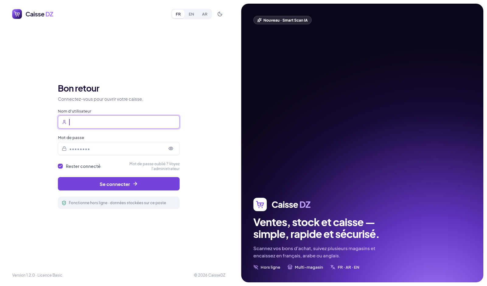<figcaption>Écran de connexion</figcaption></figure><div class="pile"><div class="carte pleine"><h5>Rôles &amp; permissions</h5><p>Chaque utilisateur a un rôle (Admin, Caissier, Magasinier…) qui détermine les modules visibles et les actions autorisées. Un utilisateur non-admin peut être verrouillé sur une caisse et un magasin.</p></div><div class="carte pleine"><h5>Première configuration</h5><p>Activation de la licence (Basic ou Avancé), identité de la boutique (NIF, NIS, RC, article d'imposition), caisse et magasin principal, compte administrateur.</p></div><div class="carte pleine"><h5>Barre latérale</h5><p>Quatre groupes repliables : Général, Stock, Tiers, Gestion ; jusqu'à 7 favoris ; mode réduit avec info-bulles.</p></div></div></div><footer class="pied"><span>CaisseDZ · Workflow détaillé</span><span>05 — Mise en route</span></footer></section><section class="page" id="m-tableau-de-bord">
      <header class="tete-module">
        <div class="tuile">📊</div>
        <div><p class="eyebrow cat">Pilotage</p><h2>Tableau de bord</h2>
        <p class="lead">Vue d&#x27;ensemble de l&#x27;activité sur la période choisie, comparée à la période précédente ; l&#x27;onglet Situation regroupe les analyses détaillées.</p></div>
      </header>
      <div class="module">
        <div class="captures"><figure>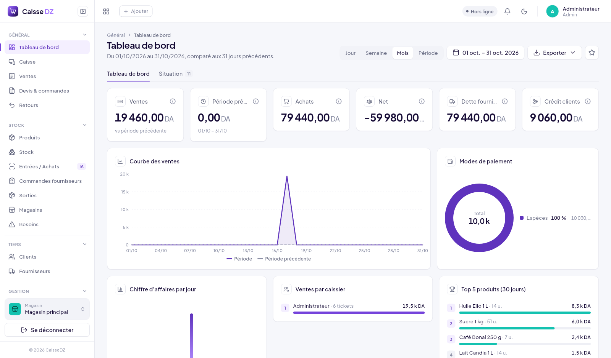<figcaption>Tableau de bord</figcaption></figure></div>
        <div class="fiche">
          <h4>Sous-modules</h4><div class="chips"><span class="chip sombre">Tableau de bord</span><span class="chip sombre">Situation (11 analyses)</span></div>
          <h4>Champs clés</h4><div class="chips"><span class="chip ">Période (jour, semaine, mois, période)</span><span class="chip ">Ventes</span><span class="chip ">Achats</span><span class="chip ">Net</span><span class="chip ">Dette fournisseurs</span><span class="chip ">Crédit clients</span><span class="chip ">Top produits</span><span class="chip ">Ventes par caissier</span></div>
          <h4>Actions disponibles</h4><div class="chips"><span class="chip action">Changer de période</span><span class="chip action">Exporter</span><span class="chip action">Ouvrir une analyse</span><span class="chip action">Analyse TVA par taux</span><span class="chip action">Excel / PDF</span></div>
        </div>
      </div>
      <div class="captures-sup"><figure>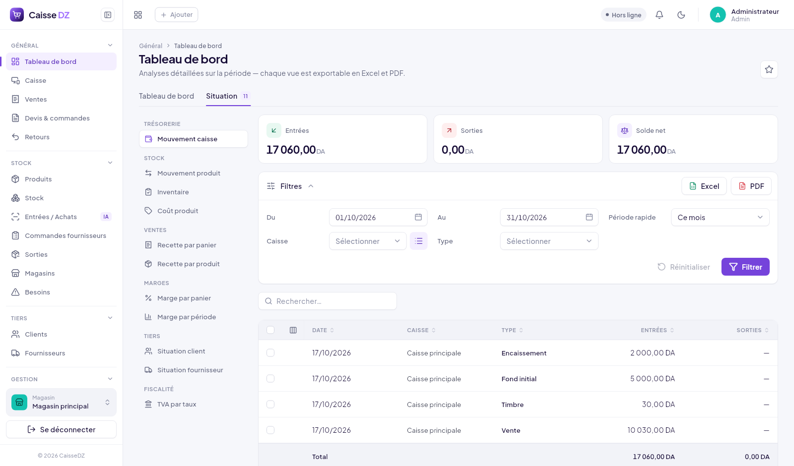<figcaption>Situation : 11 analyses</figcaption></figure></div>
      <h3 class="filet">Scénarios d'usage</h3>
      <div class="scenarios"><div class="scenario"><span class="num">1</span><p>Fin de mois : choix « Mois » puis comparaison des ventes, achats et du net avec le mois précédent.</p></div><div class="scenario"><span class="num">2</span><p>Préparation de la G50 : Situation → « TVA par taux » donne la base HT, la TVA collectée, la TVA déductible et la TVA nette par taux.</p></div><div class="scenario"><span class="num">3</span><p>Réassort : le Top 5 produits indique les articles à recommander en priorité.</p></div></div><footer class="pied"><span>CaisseDZ · Workflow détaillé</span><span>Pilotage — Tableau de bord</span></footer></section><section class="page" id="m-caisse">
      <header class="tete-module">
        <div class="tuile">🛒</div>
        <div><p class="eyebrow cat">Ventes</p><h2>Caisse</h2>
        <p class="lead">L&#x27;écran de vente au comptoir : le caissier scanne ou choisit les produits, applique les remises, choisit le client et encaisse. Une session de caisse ouverte est obligatoire.</p></div>
      </header>
      <div class="module">
        <div class="captures"><figure>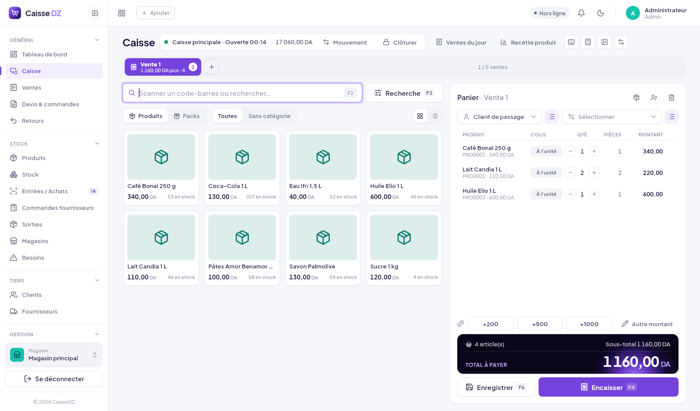<figcaption>Panier en cours, produits du catalogue</figcaption></figure></div>
        <div class="fiche">
          <h4>Sous-modules</h4><div class="chips"><span class="chip sombre">Multi-paniers (Ctrl+N)</span><span class="chip sombre">Ventes du jour (F12)</span><span class="chip sombre">Recette produit</span><span class="chip sombre">Mouvement de caisse</span><span class="chip sombre">Clôture</span></div>
          <h4>Champs clés</h4><div class="chips"><span class="chip ">Client</span><span class="chip ">Produits (code-barres, recherche)</span><span class="chip ">Mode d&#x27;achat (unité / colis)</span><span class="chip ">Pièces</span><span class="chip ">Remise</span><span class="chip ">Mode de paiement</span><span class="chip ">Total à payer</span></div>
          <h4>Actions disponibles</h4><div class="chips"><span class="chip action">Scanner (F2)</span><span class="chip action">Recherche (F3)</span><span class="chip action">Encaisser (F4)</span><span class="chip action">Enregistrer (F6)</span><span class="chip action">Client (F7)</span><span class="chip action">Remise (F8)</span><span class="chip action">Calculatrice (F9)</span><span class="chip action">Vider (F10)</span><span class="chip action">Entrée rapide (E)</span><span class="chip action">+200 / +500 / +1000</span><span class="chip action">Imprimer la facture</span></div>
        </div>
      </div>
      
      <h3 class="filet">Scénarios d'usage</h3>
      <div class="scenarios"><div class="scenario"><span class="num">1</span><p>Client avec articles : scan du code-barres, un 2ᵉ scan du même produit passe la quantité à 2, encaissement F4, ticket imprimé avec HT et TVA par taux.</p></div><div class="scenario"><span class="num">2</span><p>Client professionnel à crédit : choix du client (F7), paiement partiel, le reste s&#x27;ajoute à son solde dans la limite de son plafond.</p></div><div class="scenario"><span class="num">3</span><p>Article non codifié : touche +200 / +500 ou « Autre montant » pour vendre au montant.</p></div></div><footer class="pied"><span>CaisseDZ · Workflow détaillé</span><span>Ventes — Caisse</span></footer></section><section class="page" id="m-ventes">
      <header class="tete-module">
        <div class="tuile">🧾</div>
        <div><p class="eyebrow cat">Ventes</p><h2>Ventes</h2>
        <p class="lead">L&#x27;historique des paniers encaissés et, dans un onglet dédié, les factures et factures d&#x27;avoir émises avec leur numérotation continue.</p></div>
      </header>
      <div class="module">
        <div class="captures"><figure>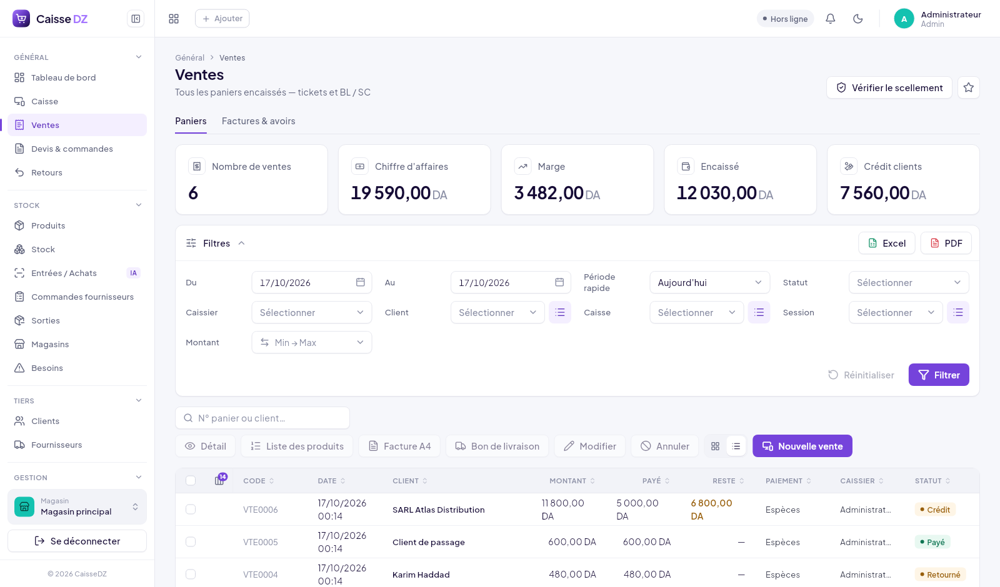<figcaption>Paniers</figcaption></figure></div>
        <div class="fiche">
          <h4>Sous-modules</h4><div class="chips"><span class="chip sombre">Paniers</span><span class="chip sombre">Factures &amp; avoirs</span></div>
          <h4>Champs clés</h4><div class="chips"><span class="chip ">Code VTE</span><span class="chip ">Date</span><span class="chip ">Client</span><span class="chip ">Caissier</span><span class="chip ">Montant TTC</span><span class="chip ">HT / TVA</span><span class="chip ">Versé</span><span class="chip ">Reste</span><span class="chip ">N° FAC / AVO</span><span class="chip ">Timbre</span><span class="chip ">Net à payer</span></div>
          <h4>Actions disponibles</h4><div class="chips"><span class="chip action">Détail</span><span class="chip action">Liste des produits</span><span class="chip action">Imprimer la facture</span><span class="chip action">Bon de livraison</span><span class="chip action">Modifier</span><span class="chip action">Annuler (motif)</span><span class="chip action">Vérifier le scellement</span><span class="chip action">Vérifier la chaîne des factures</span><span class="chip action">Excel / PDF</span></div>
        </div>
      </div>
      <div class="captures-sup"><figure>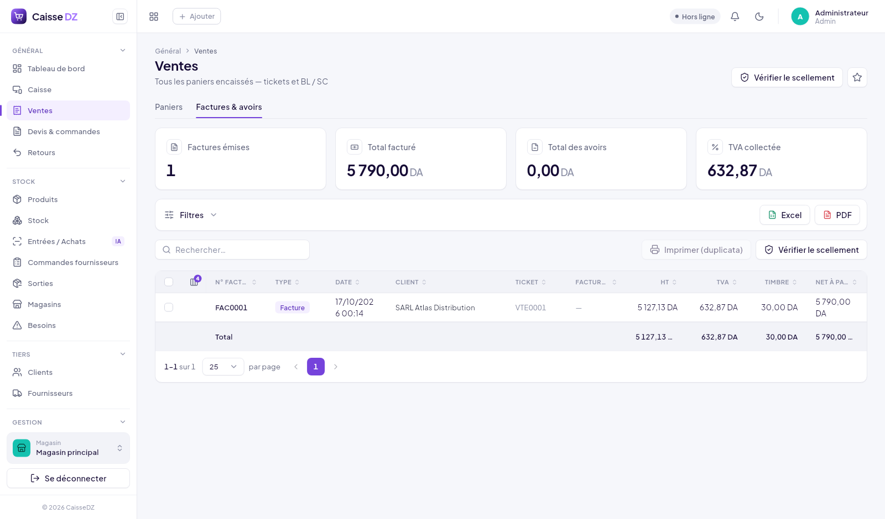<figcaption>Factures &amp; avoirs</figcaption></figure></div>
      <h3 class="filet">Scénarios d'usage</h3>
      <div class="scenarios"><div class="scenario"><span class="num">1</span><p>Un client demande une facture : FAC numérotée, NIF / NIS / RC / AI des deux parties, montant en lettres, droit de timbre sur la part payée en espèces.</p></div><div class="scenario"><span class="num">2</span><p>Retour sur une vente facturée : une facture d&#x27;avoir AVO est émise automatiquement et apparaît dans l&#x27;onglet Factures &amp; avoirs.</p></div><div class="scenario"><span class="num">3</span><p>Contrôle : « Vérifier la chaîne » recalcule l&#x27;empreinte SHA-256 de chaque facture.</p></div></div><footer class="pied"><span>CaisseDZ · Workflow détaillé</span><span>Ventes — Ventes</span></footer></section><section class="page" id="m-devis-et-commandes">
      <header class="tete-module">
        <div class="tuile">📄</div>
        <div><p class="eyebrow cat">Ventes<span class="nouveau">Nouveau</span></p><h2>Devis &amp; commandes</h2>
        <p class="lead">Le circuit commercial avant la vente : devis et factures proforma, bons de commande clients livrés en une ou plusieurs fois, et bons de livraison.</p></div>
      </header>
      <div class="module">
        <div class="captures"><figure>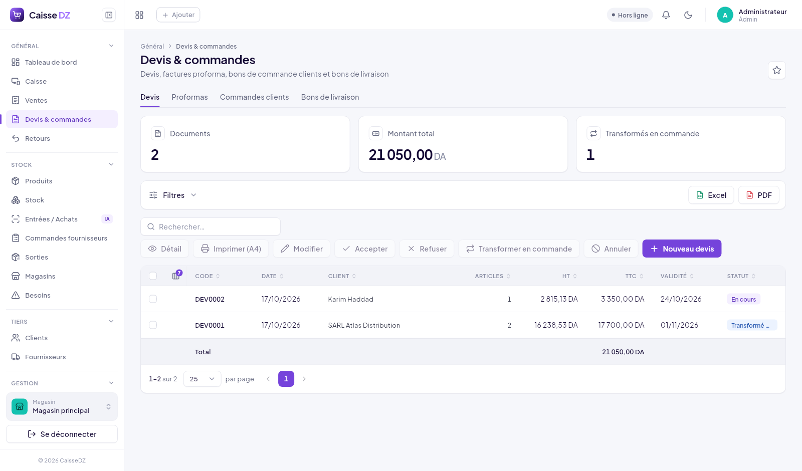<figcaption>Devis</figcaption></figure></div>
        <div class="fiche">
          <h4>Sous-modules</h4><div class="chips"><span class="chip sombre">Devis (DEV)</span><span class="chip sombre">Proformas (PRO)</span><span class="chip sombre">Commandes clients (BCC)</span><span class="chip sombre">Bons de livraison (LIV)</span></div>
          <h4>Champs clés</h4><div class="chips"><span class="chip ">Client</span><span class="chip ">Validité</span><span class="chip ">P.U. TTC</span><span class="chip ">Taux TVA</span><span class="chip ">HT / TVA / TTC</span><span class="chip ">Livré</span><span class="chip ">Reste à livrer</span><span class="chip ">Statut</span></div>
          <h4>Actions disponibles</h4><div class="chips"><span class="chip action">Nouveau devis</span><span class="chip action">Nouvelle proforma</span><span class="chip action">Nouvelle commande</span><span class="chip action">Imprimer (A4)</span><span class="chip action">Modifier</span><span class="chip action">Accepter</span><span class="chip action">Refuser</span><span class="chip action">Transformer en commande</span><span class="chip action">Livrer</span><span class="chip action">Annuler</span></div>
        </div>
      </div>
      <div class="captures-sup"><figure>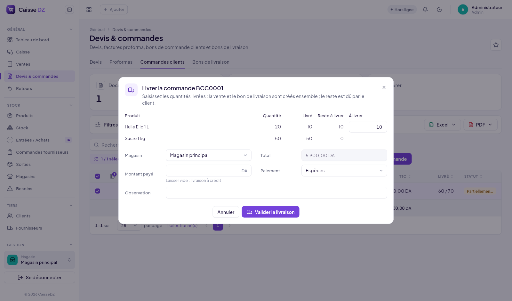<figcaption>Livraison partielle d&#x27;une commande</figcaption></figure><figure>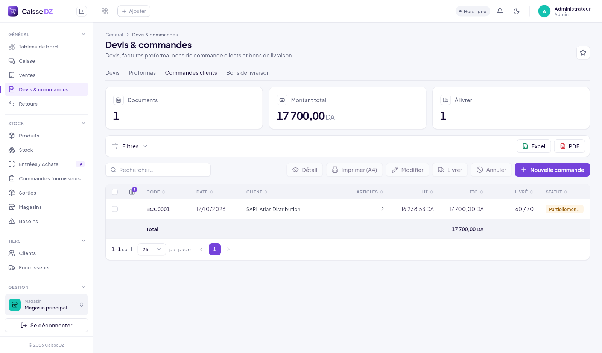<figcaption>Commandes clients</figcaption></figure><figure>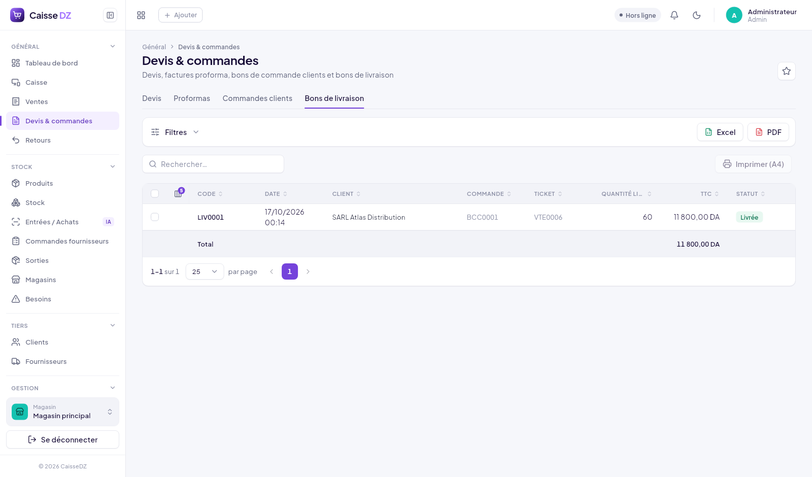<figcaption>Bons de livraison</figcaption></figure></div>
      <h3 class="filet">Scénarios d'usage</h3>
      <div class="scenarios"><div class="scenario"><span class="num">1</span><p>Devis accepté : « Transformer en commande » crée le BCC avec les mêmes lignes et prix ; le devis passe « Transformé ».</p></div><div class="scenario"><span class="num">2</span><p>Livraison partielle : 10 sur 20 livrés, la vente et le bon de livraison sont créés ensemble, le stock sort, le reste est dû par le client ; la commande passe « Partiellement livrée ».</p></div><div class="scenario"><span class="num">3</span><p>Dossier administratif : la proforma A4 porte la mention « ne vaut pas facture » ; un BL peut aussi être imprimé pour une vente de caisse depuis Ventes.</p></div></div><footer class="pied"><span>CaisseDZ · Workflow détaillé</span><span>Ventes — Devis &amp; commandes</span></footer></section><section class="page" id="m-retours">
      <header class="tete-module">
        <div class="tuile">↩️</div>
        <div><p class="eyebrow cat">Ventes</p><h2>Retours</h2>
        <p class="lead">Retours clients et fournisseurs, par ligne de la pièce d&#x27;origine, avec remise en stock ou non et règlement en avoir ou en espèces.</p></div>
      </header>
      <div class="module">
        <div class="captures"><figure>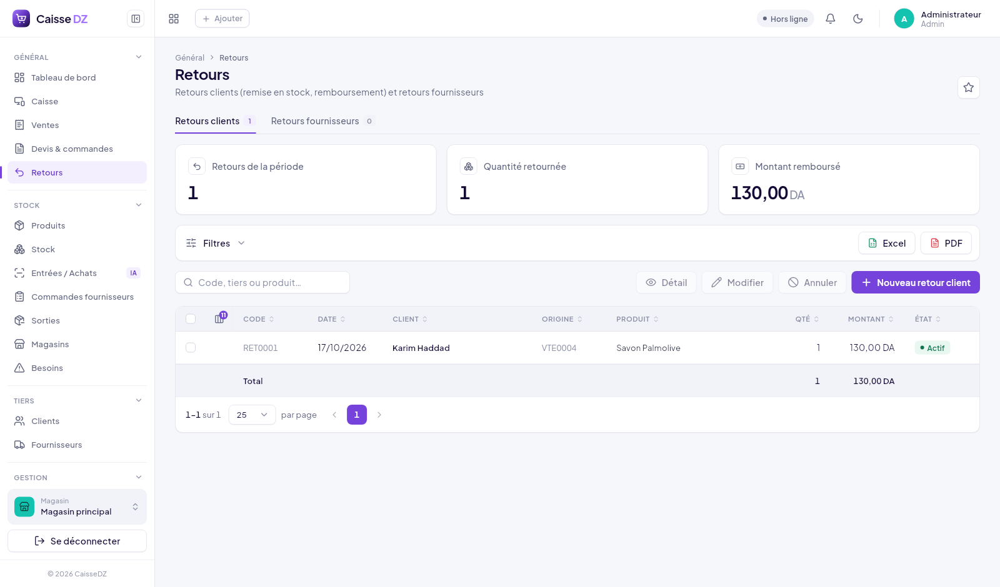<figcaption>Retours clients</figcaption></figure></div>
        <div class="fiche">
          <h4>Sous-modules</h4><div class="chips"><span class="chip sombre">Retours clients</span><span class="chip sombre">Retours fournisseurs</span></div>
          <h4>Champs clés</h4><div class="chips"><span class="chip ">Client / fournisseur</span><span class="chip ">Pièce d&#x27;origine (ses seules ventes ou entrées)</span><span class="chip ">Ligne</span><span class="chip ">Quantité</span><span class="chip ">Remise en stock</span><span class="chip ">Règlement (avoir / espèces)</span><span class="chip ">Observation</span></div>
          <h4>Actions disponibles</h4><div class="chips"><span class="chip action">Nouveau retour client</span><span class="chip action">Nouveau retour fournisseur</span><span class="chip action">Détail</span><span class="chip action">Modifier</span><span class="chip action">Annuler</span></div>
        </div>
      </div>
      
      <h3 class="filet">Scénarios d'usage</h3>
      <div class="scenarios"><div class="scenario"><span class="num">1</span><p>Client qui rapporte un article : choix du client, la liste ne propose que ses ventes ; avoir imputé sur son solde.</p></div><div class="scenario"><span class="num">2</span><p>Produit cassé : retour non remis en stock, une sortie « Casse » liée est créée automatiquement.</p></div><div class="scenario"><span class="num">3</span><p>Retour fournisseur : la dette envers le fournisseur diminue du montant retourné.</p></div></div><footer class="pied"><span>CaisseDZ · Workflow détaillé</span><span>Ventes — Retours</span></footer></section><section class="page" id="m-produits">
      <header class="tete-module">
        <div class="tuile">🏷️</div>
        <div><p class="eyebrow cat">Stock</p><h2>Produits</h2>
        <p class="lead">Le catalogue : fiches produits, catégories, sous-catégories, remises et packs.</p></div>
      </header>
      <div class="module">
        <div class="captures"><figure>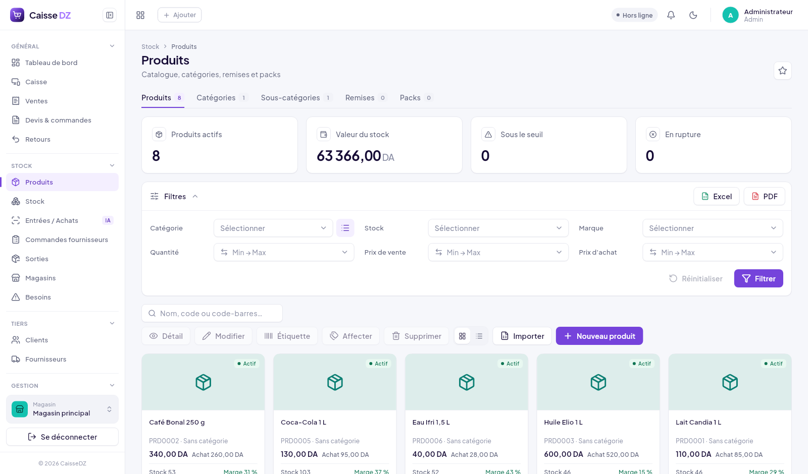<figcaption>Produits</figcaption></figure></div>
        <div class="fiche">
          <h4>Sous-modules</h4><div class="chips"><span class="chip sombre">Produits</span><span class="chip sombre">Catégories</span><span class="chip sombre">Sous-catégories</span><span class="chip sombre">Remises</span><span class="chip sombre">Packs</span></div>
          <h4>Champs clés</h4><div class="chips"><span class="chip ">Code PRD</span><span class="chip ">Désignation</span><span class="chip ">Code-barres</span><span class="chip ">Prix d&#x27;achat</span><span class="chip ">Prix de vente</span><span class="chip ">TVA (19 / 9 / 0 %)</span><span class="chip ">Seuil</span><span class="chip ">Colis</span><span class="chip ">Pièces par unité</span><span class="chip ">Expiration</span></div>
          <h4>Actions disponibles</h4><div class="chips"><span class="chip action">Nouveau produit</span><span class="chip action">Mode IA (fiche pré-remplie)</span><span class="chip action">Import Excel</span><span class="chip action">Modifier</span><span class="chip action">Désactiver</span><span class="chip action">Nouvelle remise</span><span class="chip action">Nouveau pack</span><span class="chip action">Excel / PDF</span></div>
        </div>
      </div>
      
      <h3 class="filet">Scénarios d'usage</h3>
      <div class="scenarios"><div class="scenario"><span class="num">1</span><p>Création assistée : le code-barres scanné interroge le catalogue CaisseDZ, Mantouj puis Open Food Facts pour pré-remplir la fiche.</p></div><div class="scenario"><span class="num">2</span><p>Remise « Par montant » : déclenchée en caisse au-delà d&#x27;un seuil de panier, entre deux dates.</p></div><div class="scenario"><span class="num">3</span><p>Reprise d&#x27;un ancien logiciel : import d&#x27;un classeur Excel avec correspondance des colonnes.</p></div></div><footer class="pied"><span>CaisseDZ · Workflow détaillé</span><span>Stock — Produits</span></footer></section><section class="page" id="m-stock">
      <header class="tete-module">
        <div class="tuile">📦</div>
        <div><p class="eyebrow cat">Stock</p><h2>Stock</h2>
        <p class="lead">Le niveau de stock par magasin, calculé depuis le journal des mouvements, et ce journal lui-même.</p></div>
      </header>
      <div class="module">
        <div class="captures"><figure>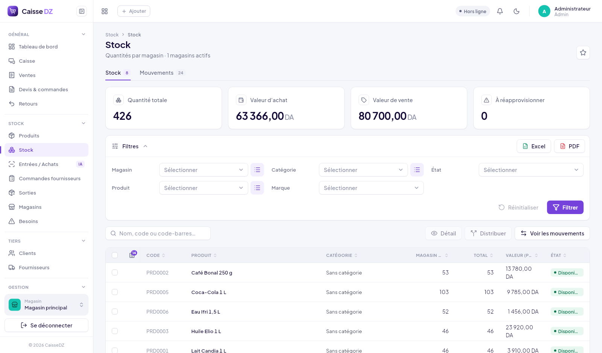<figcaption>Stock par magasin</figcaption></figure></div>
        <div class="fiche">
          <h4>Sous-modules</h4><div class="chips"><span class="chip sombre">Stock</span><span class="chip sombre">Mouvements</span></div>
          <h4>Champs clés</h4><div class="chips"><span class="chip ">Produit</span><span class="chip ">Stock par magasin</span><span class="chip ">Total</span><span class="chip ">Pièces</span><span class="chip ">Valeur</span><span class="chip ">État (rupture / sous le seuil)</span><span class="chip ">Type de mouvement</span><span class="chip ">Référence</span></div>
          <h4>Actions disponibles</h4><div class="chips"><span class="chip action">Détail</span><span class="chip action">Distribution</span><span class="chip action">Voir les mouvements</span><span class="chip action">Excel / PDF</span></div>
        </div>
      </div>
      
      <h3 class="filet">Scénarios d'usage</h3>
      <div class="scenarios"><div class="scenario"><span class="num">1</span><p>Vérifier un écart : le journal des mouvements d&#x27;un produit montre chaque entrée, vente, retour et sortie avec sa référence.</p></div><div class="scenario"><span class="num">2</span><p>Filtre magasin : la colonne Total reste calculée sur tous les magasins consultables.</p></div><div class="scenario"><span class="num">3</span><p>Préparer un réassort : filtre « sous le seuil » puis envoi vers une liste de besoins.</p></div></div><footer class="pied"><span>CaisseDZ · Workflow détaillé</span><span>Stock — Stock</span></footer></section><section class="page" id="m-entrées---achats">
      <header class="tete-module">
        <div class="tuile">📥</div>
        <div><p class="eyebrow cat">Stock</p><h2>Entrées / Achats</h2>
        <p class="lead">Réceptions fournisseurs : saisie avec scan, lecture IA des bons, entrée rapide, paiement immédiat ou à crédit, TVA déductible figée par ligne.</p></div>
      </header>
      <div class="module">
        <div class="captures"><figure>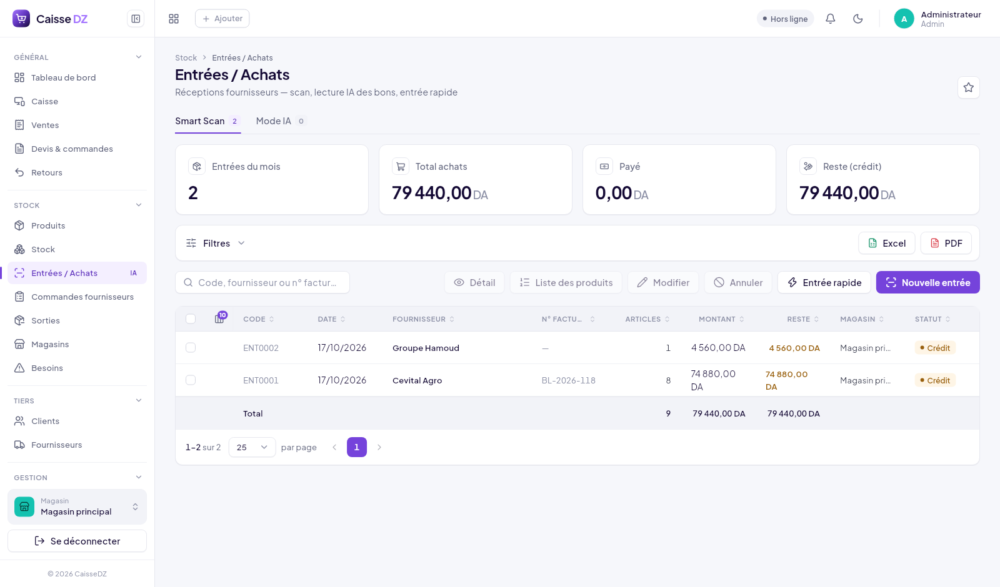<figcaption>Entrées</figcaption></figure></div>
        <div class="fiche">
          <h4>Sous-modules</h4><div class="chips"><span class="chip sombre">Smart Scan</span><span class="chip sombre">Mode IA</span></div>
          <h4>Champs clés</h4><div class="chips"><span class="chip ">Fournisseur</span><span class="chip ">N° facture</span><span class="chip ">Magasin</span><span class="chip ">Quantité</span><span class="chip ">Prix d&#x27;achat</span><span class="chip ">TVA déductible</span><span class="chip ">Versé / reste</span><span class="chip ">Caisse de paiement</span></div>
          <h4>Actions disponibles</h4><div class="chips"><span class="chip action">Nouvelle entrée</span><span class="chip action">Entrée rapide</span><span class="chip action">Liste des produits</span><span class="chip action">Modifier</span><span class="chip action">Annuler</span><span class="chip action">Réceptionner une commande fournisseur</span></div>
        </div>
      </div>
      
      <h3 class="filet">Scénarios d'usage</h3>
      <div class="scenarios"><div class="scenario"><span class="num">1</span><p>Facture fournisseur reçue en photo : le Smart Scan IA extrait les lignes, l&#x27;utilisateur valide.</p></div><div class="scenario"><span class="num">2</span><p>Réception d&#x27;une commande BCF : l&#x27;entrée s&#x27;ouvre pré-remplie avec les quantités restant à recevoir.</p></div><div class="scenario"><span class="num">3</span><p>Achat payé en partie : le reste s&#x27;ajoute à la dette fournisseur, réglée plus tard par versement.</p></div></div><footer class="pied"><span>CaisseDZ · Workflow détaillé</span><span>Stock — Entrées / Achats</span></footer></section><section class="page" id="m-commandes-fournisseurs">
      <header class="tete-module">
        <div class="tuile">🚚</div>
        <div><p class="eyebrow cat">Stock<span class="nouveau">Nouveau</span></p><h2>Commandes fournisseurs</h2>
        <p class="lead">Les bons de commande envoyés aux fournisseurs, réceptionnés en une ou plusieurs entrées.</p></div>
      </header>
      <div class="module">
        <div class="captures"><figure>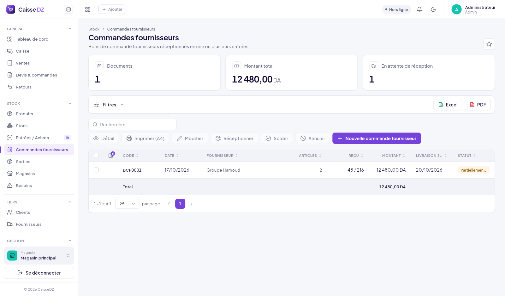<figcaption>Commandes fournisseurs</figcaption></figure></div>
        <div class="fiche">
          <h4>Sous-modules</h4><div class="chips"><span class="chip sombre">Écran unique (tableau + filtres)</span></div>
          <h4>Champs clés</h4><div class="chips"><span class="chip ">N° BCF</span><span class="chip ">Fournisseur</span><span class="chip ">Magasin de réception</span><span class="chip ">Livraison prévue</span><span class="chip ">Commandé</span><span class="chip ">Reçu</span><span class="chip ">Reste à recevoir</span><span class="chip ">Prix d&#x27;achat</span><span class="chip ">Statut</span></div>
          <h4>Actions disponibles</h4><div class="chips"><span class="chip action">Nouvelle commande fournisseur</span><span class="chip action">Imprimer (A4)</span><span class="chip action">Modifier</span><span class="chip action">Réceptionner</span><span class="chip action">Solder</span><span class="chip action">Annuler</span></div>
        </div>
      </div>
      
      <h3 class="filet">Scénarios d'usage</h3>
      <div class="scenarios"><div class="scenario"><span class="num">1</span><p>Depuis une liste de besoins : « Créer une commande fournisseur », puis impression A4 à envoyer.</p></div><div class="scenario"><span class="num">2</span><p>Livraison partielle : 48 cartons reçus sur 96, la commande passe « Partiellement reçue ».</p></div><div class="scenario"><span class="num">3</span><p>Reliquat jamais livré : « Solder » arrête l&#x27;attente ; une entrée annulée remet sa quantité en attente.</p></div></div><footer class="pied"><span>CaisseDZ · Workflow détaillé</span><span>Stock — Commandes fournisseurs</span></footer></section><section class="page" id="m-sorties">
      <header class="tete-module">
        <div class="tuile">📤</div>
        <div><p class="eyebrow cat">Stock</p><h2>Sorties</h2>
        <p class="lead">Sorties de stock hors vente : casse, péremption, consommation interne.</p></div>
      </header>
      <div class="module">
        <div class="captures"><figure>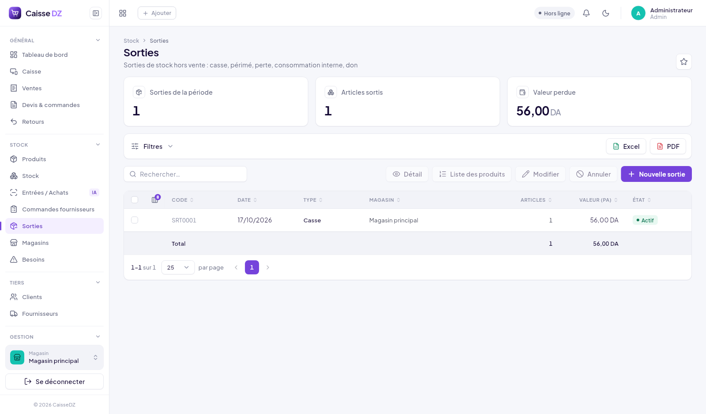<figcaption>Sorties</figcaption></figure></div>
        <div class="fiche">
          <h4>Sous-modules</h4><div class="chips"><span class="chip sombre">Écran unique (tableau + filtres)</span></div>
          <h4>Champs clés</h4><div class="chips"><span class="chip ">Code SRT</span><span class="chip ">Magasin</span><span class="chip ">Motif</span><span class="chip ">Produits</span><span class="chip ">Quantité</span><span class="chip ">Pièces</span><span class="chip ">Valeur au prix d&#x27;achat</span></div>
          <h4>Actions disponibles</h4><div class="chips"><span class="chip action">Nouvelle sortie</span><span class="chip action">Détail</span><span class="chip action">Liste des produits</span><span class="chip action">Modifier</span><span class="chip action">Annuler</span></div>
        </div>
      </div>
      
      <h3 class="filet">Scénarios d'usage</h3>
      <div class="scenarios"><div class="scenario"><span class="num">1</span><p>Produits périmés : sortie motif « Péremption », le stock et la valeur baissent.</p></div><div class="scenario"><span class="num">2</span><p>Quantité plafonnée : impossible de sortir plus que le stock du magasin.</p></div><div class="scenario"><span class="num">3</span><p>Erreur de saisie : annulation avec motif, le stock est rétabli.</p></div></div><footer class="pied"><span>CaisseDZ · Workflow détaillé</span><span>Stock — Sorties</span></footer></section><section class="page" id="m-magasins">
      <header class="tete-module">
        <div class="tuile">🏬</div>
        <div><p class="eyebrow cat">Stock</p><h2>Magasins</h2>
        <p class="lead">Les points de stock et les transferts entre eux (palier Avancé).</p></div>
      </header>
      <div class="module">
        <div class="captures"><figure>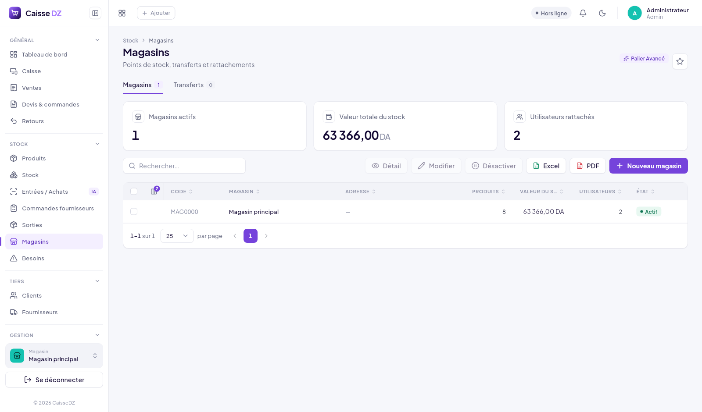<figcaption>Magasins</figcaption></figure></div>
        <div class="fiche">
          <h4>Sous-modules</h4><div class="chips"><span class="chip sombre">Magasins</span><span class="chip sombre">Transferts</span></div>
          <h4>Champs clés</h4><div class="chips"><span class="chip ">Code MAG</span><span class="chip ">Nom</span><span class="chip ">Adresse</span><span class="chip ">Responsable</span><span class="chip ">Valeur du stock</span><span class="chip ">Transfert (origine → destination)</span></div>
          <h4>Actions disponibles</h4><div class="chips"><span class="chip action">Nouveau magasin</span><span class="chip action">Nouveau transfert</span><span class="chip action">Modifier</span><span class="chip action">Désactiver</span><span class="chip action">Détail</span></div>
        </div>
      </div>
      
      <h3 class="filet">Scénarios d'usage</h3>
      <div class="scenarios"><div class="scenario"><span class="num">1</span><p>Dépôt et boutique : réassort de la boutique par un transfert depuis le dépôt.</p></div><div class="scenario"><span class="num">2</span><p>Utilisateur rattaché : chaque utilisateur voit son magasin principal par défaut.</p></div><div class="scenario"><span class="num">3</span><p>Fermeture d&#x27;un point : désactivation, l&#x27;historique reste consultable.</p></div></div><footer class="pied"><span>CaisseDZ · Workflow détaillé</span><span>Stock — Magasins</span></footer></section><section class="page" id="m-besoins">
      <header class="tete-module">
        <div class="tuile">⚠️</div>
        <div><p class="eyebrow cat">Stock</p><h2>Besoins</h2>
        <p class="lead">Listes de besoins par fournisseur, ruptures et seuils, produits expirés ou proches de l&#x27;expiration.</p></div>
      </header>
      <div class="module">
        <div class="captures"><figure>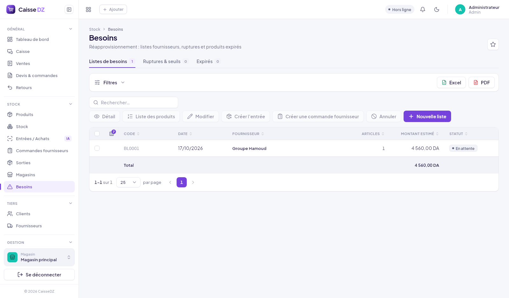<figcaption>Listes de besoins</figcaption></figure></div>
        <div class="fiche">
          <h4>Sous-modules</h4><div class="chips"><span class="chip sombre">Listes</span><span class="chip sombre">Ruptures &amp; seuils</span><span class="chip sombre">Expirés</span></div>
          <h4>Champs clés</h4><div class="chips"><span class="chip ">Fournisseur</span><span class="chip ">Produits</span><span class="chip ">À commander</span><span class="chip ">Prix estimé</span><span class="chip ">Livraison souhaitée</span><span class="chip ">Statut</span></div>
          <h4>Actions disponibles</h4><div class="chips"><span class="chip action">Nouvelle liste</span><span class="chip action">Ajouter sous le seuil</span><span class="chip action">Ajouter les ruptures</span><span class="chip action">PDF fournisseur</span><span class="chip action">Créer une entrée</span><span class="chip action">Créer une commande fournisseur</span><span class="chip action">Annuler</span></div>
        </div>
      </div>
      
      <h3 class="filet">Scénarios d'usage</h3>
      <div class="scenarios"><div class="scenario"><span class="num">1</span><p>Inventaire du matin : « Ajouter les ruptures » remplit la liste avec les quantités suggérées.</p></div><div class="scenario"><span class="num">2</span><p>Commande formelle : la liste devient un bon de commande fournisseur BCF.</p></div><div class="scenario"><span class="num">3</span><p>Produits à date courte : l&#x27;onglet Expirés liste ceux qui expirent sous 30 jours.</p></div></div><footer class="pied"><span>CaisseDZ · Workflow détaillé</span><span>Stock — Besoins</span></footer></section><section class="page" id="m-clients">
      <header class="tete-module">
        <div class="tuile">👤</div>
        <div><p class="eyebrow cat">Tiers</p><h2>Clients</h2>
        <p class="lead">Fiches clients, solde, relevé, fidélité et versements.</p></div>
      </header>
      <div class="module">
        <div class="captures"><figure>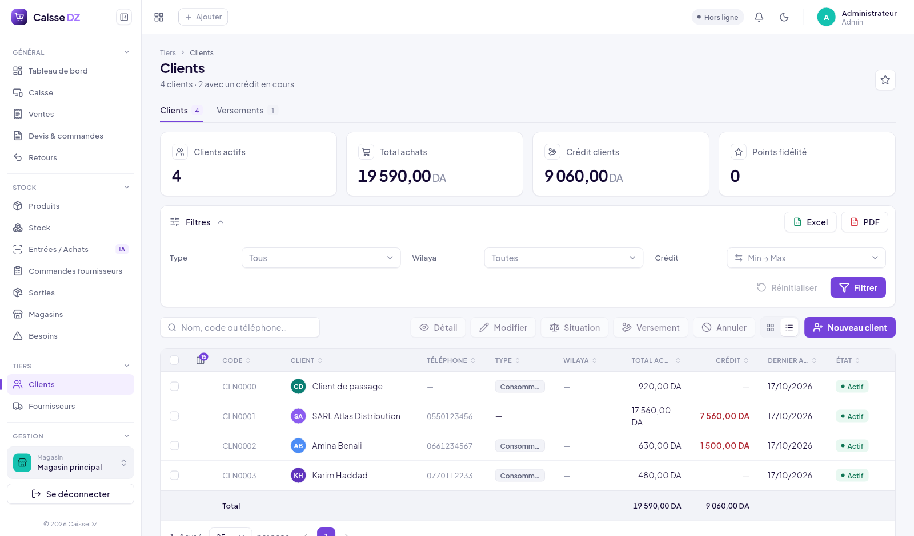<figcaption>Clients</figcaption></figure></div>
        <div class="fiche">
          <h4>Sous-modules</h4><div class="chips"><span class="chip sombre">Clients</span><span class="chip sombre">Versements</span></div>
          <h4>Champs clés</h4><div class="chips"><span class="chip ">Code CLN</span><span class="chip ">Nom</span><span class="chip ">Téléphone (10 chiffres)</span><span class="chip ">Adresse</span><span class="chip ">NIF / NIS / RC / AI</span><span class="chip ">Plafond de crédit</span><span class="chip ">Solde initial</span><span class="chip ">Points</span><span class="chip ">Solde</span></div>
          <h4>Actions disponibles</h4><div class="chips"><span class="chip action">Nouveau client</span><span class="chip action">Situation (relevé)</span><span class="chip action">Versement</span><span class="chip action">Modifier</span><span class="chip action">Désactiver</span><span class="chip action">Filtrer les versements par tiers</span><span class="chip action">Excel / PDF</span></div>
        </div>
      </div>
      <div class="captures-sup"><figure>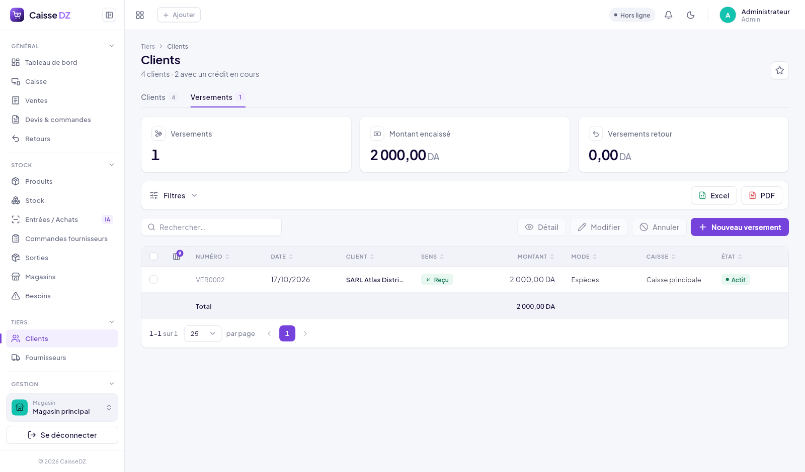<figcaption>Versements (filtre par tiers)</figcaption></figure></div>
      <h3 class="filet">Scénarios d'usage</h3>
      <div class="scenarios"><div class="scenario"><span class="num">1</span><p>Reprise d&#x27;un client existant : son ancienne dette est saisie en solde initial, réglée en premier par les versements.</p></div><div class="scenario"><span class="num">2</span><p>Client professionnel : NIF, NIS, RC et article d&#x27;imposition apparaissent sur ses factures.</p></div><div class="scenario"><span class="num">3</span><p>Encaissement d&#x27;une dette : versement imputé sur les plus anciens paniers non soldés.</p></div></div><footer class="pied"><span>CaisseDZ · Workflow détaillé</span><span>Tiers — Clients</span></footer></section><section class="page" id="m-fournisseurs">
      <header class="tete-module">
        <div class="tuile">🏭</div>
        <div><p class="eyebrow cat">Tiers</p><h2>Fournisseurs</h2>
        <p class="lead">Fiches fournisseurs, dettes, relevé et versements.</p></div>
      </header>
      <div class="module">
        <div class="captures"><figure>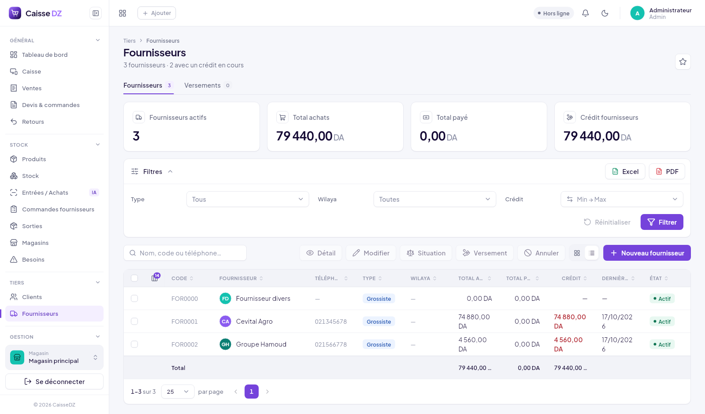<figcaption>Fournisseurs</figcaption></figure></div>
        <div class="fiche">
          <h4>Sous-modules</h4><div class="chips"><span class="chip sombre">Fournisseurs</span><span class="chip sombre">Versements</span></div>
          <h4>Champs clés</h4><div class="chips"><span class="chip ">Code FOR</span><span class="chip ">Nom</span><span class="chip ">Téléphone (10 chiffres)</span><span class="chip ">NIF / NIS / RC / AI</span><span class="chip ">Solde initial</span><span class="chip ">Achats</span><span class="chip ">Versé</span><span class="chip ">Dette</span></div>
          <h4>Actions disponibles</h4><div class="chips"><span class="chip action">Nouveau fournisseur</span><span class="chip action">Situation (relevé)</span><span class="chip action">Versement</span><span class="chip action">Modifier</span><span class="chip action">Désactiver</span></div>
        </div>
      </div>
      
      <h3 class="filet">Scénarios d'usage</h3>
      <div class="scenarios"><div class="scenario"><span class="num">1</span><p>Avance versée avant livraison : solde initial négatif, imputé sur les prochaines entrées.</p></div><div class="scenario"><span class="num">2</span><p>Relevé à envoyer : situation du fournisseur exportée en PDF.</p></div><div class="scenario"><span class="num">3</span><p>Règlement partiel : versement imputé sur les entrées les plus anciennes.</p></div></div><footer class="pied"><span>CaisseDZ · Workflow détaillé</span><span>Tiers — Fournisseurs</span></footer></section><section class="page" id="m-gestion-caisse">
      <header class="tete-module">
        <div class="tuile">💰</div>
        <div><p class="eyebrow cat">Gestion</p><h2>Gestion caisse</h2>
        <p class="lead">Les caisses, leurs sessions, mouvements, transferts et clôtures Z scellées.</p></div>
      </header>
      <div class="module">
        <div class="captures"><figure>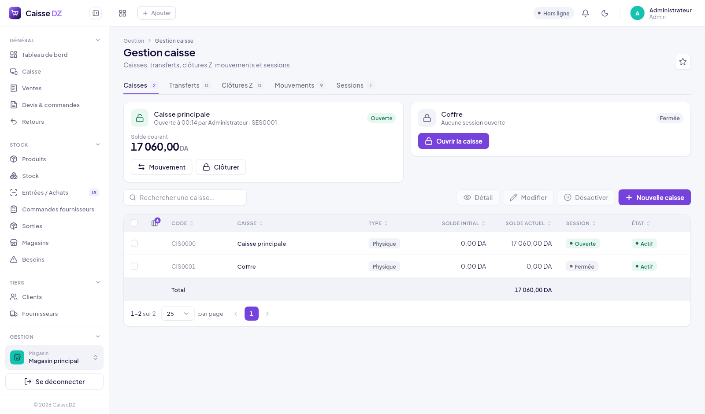<figcaption>Caisses</figcaption></figure></div>
        <div class="fiche">
          <h4>Sous-modules</h4><div class="chips"><span class="chip sombre">Caisses</span><span class="chip sombre">Transferts</span><span class="chip sombre">Clôtures Z</span><span class="chip sombre">Mouvements</span><span class="chip sombre">Sessions</span></div>
          <h4>Champs clés</h4><div class="chips"><span class="chip ">Caisse</span><span class="chip ">Fond initial</span><span class="chip ">Solde courant</span><span class="chip ">Espèces attendues / comptées</span><span class="chip ">Écart</span><span class="chip ">Récapitulatif TVA</span><span class="chip ">Empreinte</span></div>
          <h4>Actions disponibles</h4><div class="chips"><span class="chip action">Ouvrir la caisse</span><span class="chip action">Mouvement</span><span class="chip action">Clôturer (Z)</span><span class="chip action">Transfert vers le coffre</span><span class="chip action">Détail</span><span class="chip action">Nouvelle caisse</span></div>
        </div>
      </div>
      
      <h3 class="filet">Scénarios d'usage</h3>
      <div class="scenarios"><div class="scenario"><span class="num">1</span><p>Fin de journée : comptage, écart calculé, clôture Z figée avec la TVA par taux de la session.</p></div><div class="scenario"><span class="num">2</span><p>Dépôt au coffre : transfert d&#x27;espèces de la caisse vers le coffre CIS0001.</p></div><div class="scenario"><span class="num">3</span><p>Contrôle : le journal des mouvements de caisse n&#x27;accepte que des ajouts (contre-passation).</p></div></div><footer class="pied"><span>CaisseDZ · Workflow détaillé</span><span>Gestion — Gestion caisse</span></footer></section><section class="page" id="m-utilisateurs">
      <header class="tete-module">
        <div class="tuile">🔐</div>
        <div><p class="eyebrow cat">Gestion</p><h2>Utilisateurs</h2>
        <p class="lead">Comptes, rôles et permissions.</p></div>
      </header>
      <div class="module">
        <div class="captures"><figure>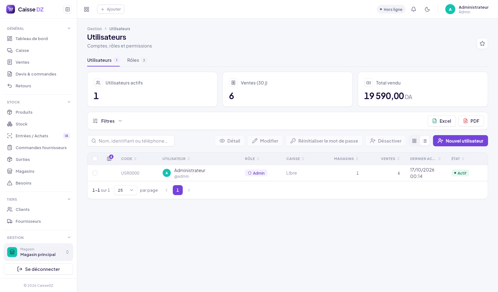<figcaption>Utilisateurs</figcaption></figure></div>
        <div class="fiche">
          <h4>Sous-modules</h4><div class="chips"><span class="chip sombre">Utilisateurs</span><span class="chip sombre">Rôles</span></div>
          <h4>Champs clés</h4><div class="chips"><span class="chip ">Identifiant</span><span class="chip ">Nom</span><span class="chip ">Rôle</span><span class="chip ">Caisse attachée</span><span class="chip ">Magasin principal</span><span class="chip ">Permissions</span></div>
          <h4>Actions disponibles</h4><div class="chips"><span class="chip action">Nouvel utilisateur</span><span class="chip action">Nouveau rôle</span><span class="chip action">Modifier</span><span class="chip action">Réinitialiser le mot de passe</span><span class="chip action">Désactiver</span></div>
        </div>
      </div>
      
      <h3 class="filet">Scénarios d'usage</h3>
      <div class="scenarios"><div class="scenario"><span class="num">1</span><p>Caissier : accès Caisse et Ventes, caisse verrouillée sur son poste.</p></div><div class="scenario"><span class="num">2</span><p>Magasinier : Stock, Entrées, Sorties, Besoins, sans les prix d&#x27;achat s&#x27;il le faut.</p></div><div class="scenario"><span class="num">3</span><p>Dépassement de plafond : réservé aux rôles qui ont la permission correspondante.</p></div></div><footer class="pied"><span>CaisseDZ · Workflow détaillé</span><span>Gestion — Utilisateurs</span></footer></section><section class="page" id="m-zakat">
      <header class="tete-module">
        <div class="tuile">🌙</div>
        <div><p class="eyebrow cat">Gestion</p><h2>Zakat</h2>
        <p class="lead">Calcul annuel de la Zakat sur le capital commercial.</p></div>
      </header>
      <div class="module">
        <div class="captures"><figure>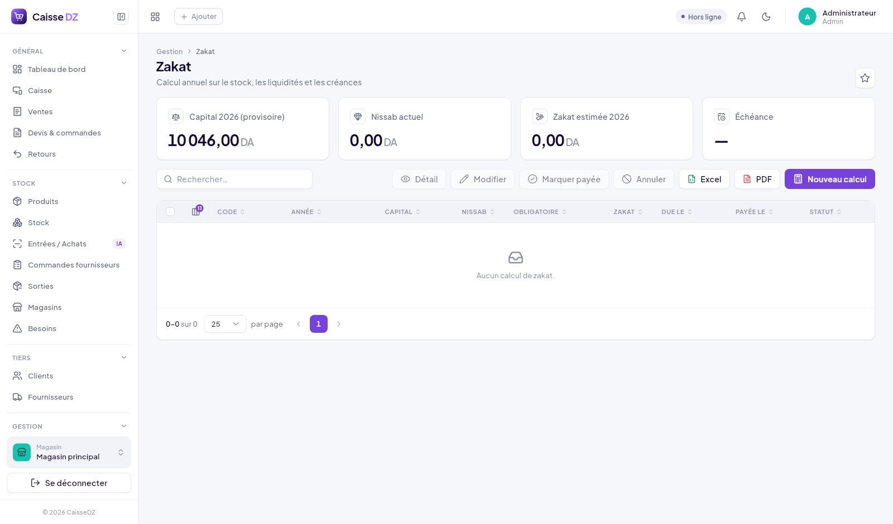<figcaption>Zakat</figcaption></figure></div>
        <div class="fiche">
          <h4>Sous-modules</h4><div class="chips"><span class="chip sombre">Écran unique (tableau + calcul)</span></div>
          <h4>Champs clés</h4><div class="chips"><span class="chip ">Année</span><span class="chip ">Capital (stock, liquidités, créances, dettes)</span><span class="chip ">Nissab</span><span class="chip ">Zakat due</span><span class="chip ">Échéance</span><span class="chip ">Payée le</span></div>
          <h4>Actions disponibles</h4><div class="chips"><span class="chip action">Nouveau calcul</span><span class="chip action">Modifier</span><span class="chip action">Marquer payée</span><span class="chip action">Annuler</span><span class="chip action">Excel / PDF</span></div>
        </div>
      </div>
      
      <h3 class="filet">Scénarios d'usage</h3>
      <div class="scenarios"><div class="scenario"><span class="num">1</span><p>Échéance annuelle : le capital est proposé depuis le stock, la caisse et les soldes.</p></div><div class="scenario"><span class="num">2</span><p>Capital sous le nissab : aucune zakat due.</p></div><div class="scenario"><span class="num">3</span><p>Suivi : la zakat marquée payée garde sa date de paiement.</p></div></div><footer class="pied"><span>CaisseDZ · Workflow détaillé</span><span>Gestion — Zakat</span></footer></section><section class="page" id="m-historique">
      <header class="tete-module">
        <div class="tuile">📜</div>
        <div><p class="eyebrow cat">Gestion</p><h2>Historique</h2>
        <p class="lead">Le journal de toutes les actions, consultable selon le rôle et impossible à modifier.</p></div>
      </header>
      <div class="module">
        <div class="captures"><figure>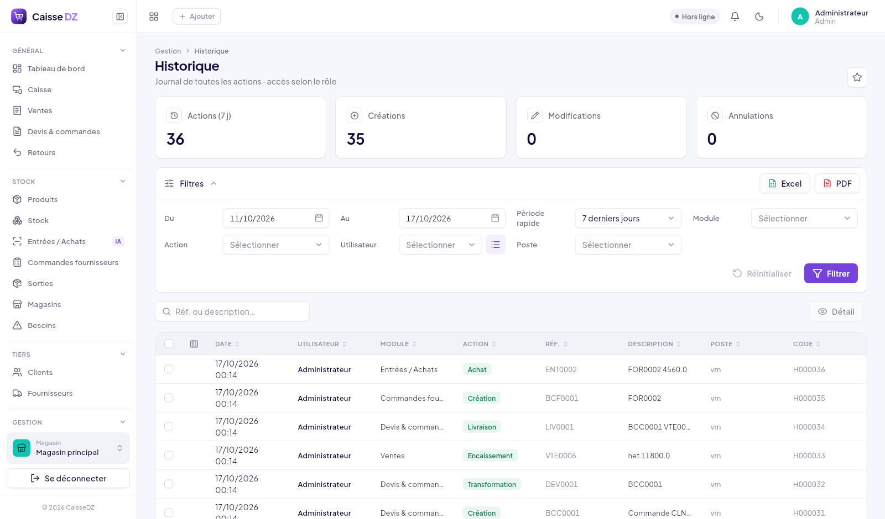<figcaption>Historique</figcaption></figure></div>
        <div class="fiche">
          <h4>Sous-modules</h4><div class="chips"><span class="chip sombre">Écran unique (tableau + filtres)</span></div>
          <h4>Champs clés</h4><div class="chips"><span class="chip ">Date</span><span class="chip ">Utilisateur</span><span class="chip ">Module</span><span class="chip ">Action</span><span class="chip ">Référence</span><span class="chip ">Description</span><span class="chip ">Poste</span></div>
          <h4>Actions disponibles</h4><div class="chips"><span class="chip action">Filtrer (période, module, action, utilisateur, poste)</span><span class="chip action">Détail</span><span class="chip action">Excel / PDF</span></div>
        </div>
      </div>
      
      <h3 class="filet">Scénarios d'usage</h3>
      <div class="scenarios"><div class="scenario"><span class="num">1</span><p>Qui a annulé ce panier ? Filtre module Ventes, action Annulation.</p></div><div class="scenario"><span class="num">2</span><p>Traçabilité commerciale : création, transformation et livraison des devis et commandes.</p></div><div class="scenario"><span class="num">3</span><p>Export : chaque export Excel / PDF est lui-même journalisé.</p></div></div><footer class="pied"><span>CaisseDZ · Workflow détaillé</span><span>Gestion — Historique</span></footer></section><section class="page" id="m-paramètres">
      <header class="tete-module">
        <div class="tuile">⚙️</div>
        <div><p class="eyebrow cat">Gestion</p><h2>Paramètres</h2>
        <p class="lead">Préférences du poste, de la boutique et de l&#x27;application.</p></div>
      </header>
      <div class="module">
        <div class="captures"><figure>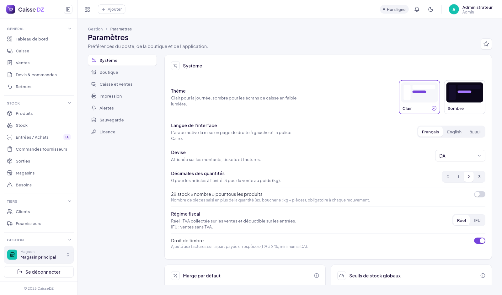<figcaption>Paramètres</figcaption></figure></div>
        <div class="fiche">
          <h4>Sous-modules</h4><div class="chips"><span class="chip sombre">Système</span><span class="chip sombre">Boutique</span><span class="chip sombre">Caisse et ventes</span><span class="chip sombre">Impression</span><span class="chip sombre">Alertes</span><span class="chip sombre">Sauvegarde</span><span class="chip sombre">Licence</span></div>
          <h4>Champs clés</h4><div class="chips"><span class="chip ">Thème</span><span class="chip ">Langue</span><span class="chip ">Devise</span><span class="chip ">Régime fiscal (Réel / IFU)</span><span class="chip ">Droit de timbre</span><span class="chip ">NIF / NIS / RC / article</span><span class="chip ">Imprimante (58 / 80 mm)</span></div>
          <h4>Actions disponibles</h4><div class="chips"><span class="chip action">Changer de régime</span><span class="chip action">Activer le timbre</span><span class="chip action">Sauvegarder</span><span class="chip action">Restaurer</span><span class="chip action">Activer la licence</span></div>
        </div>
      </div>
      
      <h3 class="filet">Scénarios d'usage</h3>
      <div class="scenarios"><div class="scenario"><span class="num">1</span><p>Commerçant à l&#x27;IFU : régime IFU, les ventes sortent sans TVA.</p></div><div class="scenario"><span class="num">2</span><p>Identité fiscale : NIF, NIS, RC et article d&#x27;imposition saisis une fois, repris sur chaque facture.</p></div><div class="scenario"><span class="num">3</span><p>Sécurité : sauvegarde chiffrée par mot de passe, restaurable sur un autre poste.</p></div></div><footer class="pied"><span>CaisseDZ · Workflow détaillé</span><span>Gestion — Paramètres</span></footer></section><section class="page" id="fiscalite"><p class="eyebrow">Fiscalité</p><h2>TVA, factures et déclarations</h2><p class="lead">La fiscalité algérienne intégrée au cycle de vente et d&#x27;achat, selon le régime choisi dans Paramètres.</p><div class="deux"><div><h4>TVA collectée et déductible</h4><div class="table-defile"><table class="taux"><thead><tr><th>Taux</th><th>Exemples</th><th>Où il apparaît</th></tr></thead><tbody><tr><td>19 %</td><td>Taux normal</td><td rowspan="3">Ligne de vente (figé), ticket, facture, clôture Z, détail des ventes, entrées (TVA déductible), analyse TVA par taux, export G50</td></tr><tr><td>9 %</td><td>Taux réduit</td></tr><tr><td>0 %</td><td>Exonéré</td></tr></tbody></table></div><p class="lead">Les prix saisis sont TTC ; le HT et la TVA sont ventilés au centime et la somme reste exacte.</p></div><div><h4>Régime et documents</h4><div class="pile"><div class="carte pleine"><h5>Réel ou IFU</h5><p>Réel : TVA collectée et déductible. IFU : ventes sans TVA.</p></div><div class="carte pleine"><h5>Facture et avoir</h5><p>FAC et AVO numérotés sans trou, identités fiscales figées, montant en lettres, droit de timbre sur la part en espèces, chaîne SHA-256.</p></div><div class="carte pleine"><h5>Aide à la G50</h5><p>Export Excel de la TVA collectée, déductible et nette par taux sur la période, avec le droit de timbre.</p></div></div></div></div><footer class="pied"><span>CaisseDZ · Workflow détaillé</span><span>Fiscalité</span></footer></section><section class="page"><p class="eyebrow">Pour conclure</p><h2>Sécurité, conformité &amp; fonctionnement hors ligne</h2><p class="lead">Un socle pensé pour un commerce réel : résister à un contrôle, fonctionner sans connexion et rester simple au quotidien.</p><div class="deux"><div><h4>Sécurité &amp; traçabilité</h4><div class="pile"><div class="carte pleine"><div class="ico">🗃️</div><h5>Registre fiscal inviolable</h5><p>Ventes, lignes, paiements, mouvements de stock, factures et journal fiscal sont protégés par des déclencheurs : aucune modification après coup.</p></div><div class="carte pleine"><div class="ico">🔒</div><h5>Clôtures Z scellées</h5><p>Chaque Z est figé à sa création avec son empreinte ; une période clôturée n&#x27;accepte plus d&#x27;écriture sur sa caisse.</p></div><div class="carte pleine"><div class="ico">📜</div><h5>Journal d&#x27;audit complet</h5><p>Création, modification, annulation et export tracés avec l&#x27;utilisateur, le poste et l&#x27;horodatage.</p></div></div></div><div><h4>Fonctionnement au quotidien</h4><div class="pile"><div class="carte pleine"><div class="ico">🔌</div><h5>Sans connexion Internet obligatoire</h5><p>Tout fonctionne en local ; seuls le Smart Scan IA et la recherche de fiches en ligne demandent une connexion.</p></div><div class="carte pleine"><div class="ico">🖥️</div><h5>Un poste, plusieurs rôles</h5><p>Comptes et permissions séparent ce que chacun peut faire.</p></div><div class="carte pleine"><div class="ico">💾</div><h5>Base chiffrée et sauvegardes</h5><p>Base SQLCipher chiffrée avec la clé du poste, sauvegarde automatique au démarrage (30 archives), sauvegarde manuelle protégée par mot de passe.</p></div></div></div></div><footer class="pied"><span>CaisseDZ · Workflow détaillé</span><span>Sécurité &amp; conformité</span></footer></section>
</main>
